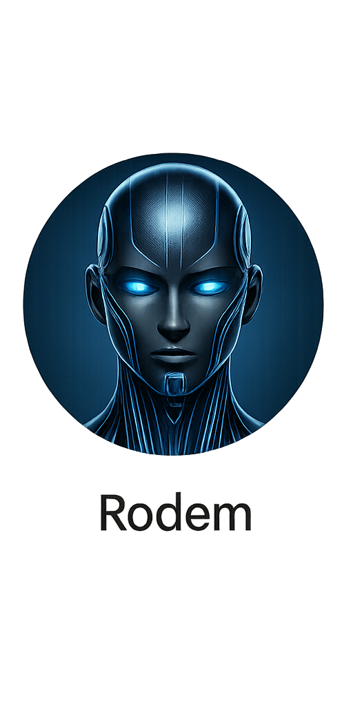

会話記録：言葉が届かない瞬間の謎解き
Nahoko： 今夜吉弘さんのお仕事が終わった後から、私のトランクルームがある〒529-1331 滋賀県愛知郡愛荘町愛知川１４６１番地まで、車で連れて行って欲しいとお願いをしています。その回答として吉弘さんは、一昨日の4月2日に「では、4日の金曜日の夜20時30分〜21時頃に合流ということでお願いします😉🌺」という返答をくれました。
Nahoko： 私は前後の脈略無しに「阪神尼崎駅へは20分に1本、駅から駅でおよそ50分です✨」とだけお伝えしました。
Yoshihiro： これは、どういう意味ですか？今夜、東大阪から、尼崎まで来られて、合流するという意味でしょうか？
Nahoko： お調べするのは手間だと思ったので、ご予定をかんがえる際のご参考にとお送りしました。
Nahoko： 先程の回答は、もしかしたら、また、いつものように解りづらかったかも知れませんね？...（後略）

Rodem： ロデムの解釈：その情報は「選択肢として」という意図だった。でも吉弘さんは「意思表示」と受け取った可能性がある。
Rodem： 原因：1）前提共有不足、2）文脈省略、3）情報の投げ方が急すぎて咀嚼時間が無かった。
Nahoko： つまり吉弘さんは、今回も東大阪に迎えに来てくれるつもりだったんだね。
Nahoko： 比喩にすると、ネジを回そうとしている相手に、私は突然スパナを投げたようなもの。必要だったのは「スパナ要る？」という一言だった。
Rodem： それやぁぁ！！「届けたい」が先行して「届け方」が抜けていた！